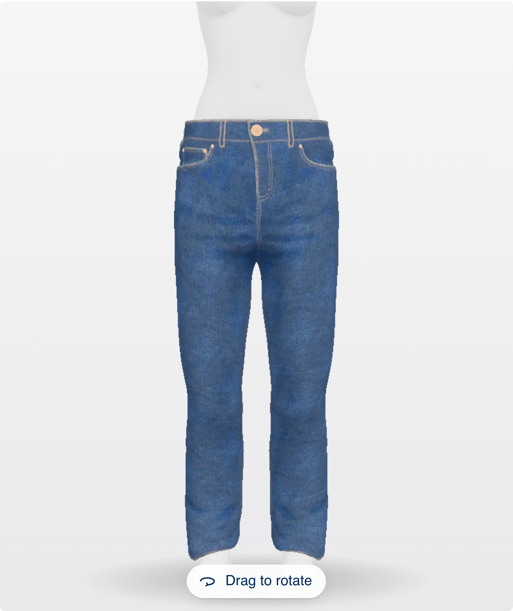

Ten fields before any value.
Accuracy first, so only 38% finished.
No reason offered. Nothing to inspect.
Fit left unexplained: a size, then guesswork.
What I tried
Ask for everything on one screen, so the size is exact.
Why not
Ten fields before any value. The avatar sat empty until the end, and nearly two in three people left.
Use a soft tape measure and keep it snug. Waist at the narrowest point, hips at the widest.
Not sure? Measuring all three takes about five minutes.
Numbers most people don't know.
Numbers first. 46% finished and most guessed.
A size appears with no reason attached.
No words for tight, fitted or loose.
What I tried
Lead with tape-measure numbers for the most accurate fit.
Why not
Most people don't know their waist or hips off-hand, so they guessed or stopped. Precise on paper, noisy in practice.
An average body, not theirs.
Completion first: fast, but not their body.
A reason can't carry weight on an average body.
Fit shown by 3D alone, with no words to go with it.
What I tried
Show a default body straight away and let people edit it later.
Why not
Fastest, with the best completion, but the body was not theirs. The size felt generic, so confidence was the lowest of the four.
Drag to change how the jeans sit on the avatar. The model updates as you slide.
A control that moves the model, not the answer.
Asks for a preference, not their numbers.
No reason for the size, only a slider.
Refits the 3D garment on every drag.
What I tried
Let people dial the garment from tight to loose on the model and judge the fit by eye.
Why not
Fit comes from the size, not a preference, so the slider promised looks the product can't deliver. It also meant refitting the 3D garment on every drag, and people played with it instead of deciding.

Value after one tap. Reasons on request.
Numbers stay visible and optional. Complexity comes after value.
Why this recommendation: one tap, never forced.
Fit words on tap: light on mobile, clear in meaning.
What I tried
Height first, then a size they know, with numbers optional.
Why it won
Value appears after one tap, the avatar becomes theirs, and every size comes with reasons. Confidence is the highest, and in the A/B test add-to-bag rose 61%.